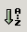
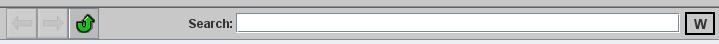

|  |  |
The above pictures show the controls that you can use to search or sort a dictionary.
The icon at the left appears on the west wall of the WOLF application frame. Simply click on that icon, and WOLF will sort the dictionary alphabetically. For languages that require custom sort orders, please refer to the language entry page.
On the right of the above picture, there is a label shown containing a W character. Repeated clicking on this label will toggle the W to a C, an M, an O, and back to a W. To control the type of searching that you desire, W stands for a word search; C stands for a category search; M stands for a Main Entry search; O stands for an ontology search. WOLF supports Categories and Main Entry fields which allow entry of searchable items separated by commas. For example, in the Categories field, one might enter mammal, animal, four-legged, living thing. You then can do a category search for the item animal and all words that contain that category will be found.
To start a search, type the term you want in the text field to the left of the label and tap the keyboard enter key. Searching allows for wild card entry. For example, searching for w* will find all the words in the dictionary starting with the letter, w. The * serves as a wild card for any number of characters. Similarly, the ? character wild cards a single character. Actually, the search field allows for much more powerful capabilities. If you understand regular expressions, it supports almost all regular expressions with a couple of minor differences. Searches are not case-sensitive. (w* will find the same words as W*). Also, if you enter a * or a ?, WOLF will insert a period for you (if you didn't already do that). This is an accommodation for users that do not have a background with using regular expressions. Although it slightly reduces the searching capabilities, it makes life easier for those users.
At the left of the above picture are three buttons, which work similar to back, forward, and refresh buttons that exist in most Web browsers. Each search refines the words contained in a previous search. After a search, you can click back to have WOLF display the words shown prior to the search. The forward button restores the search, should you wish to do that. The back and forward buttons are ghosted until you do your first search (note how they show in the above picture). The refresh button reloads the entire dictionary in its initial state.